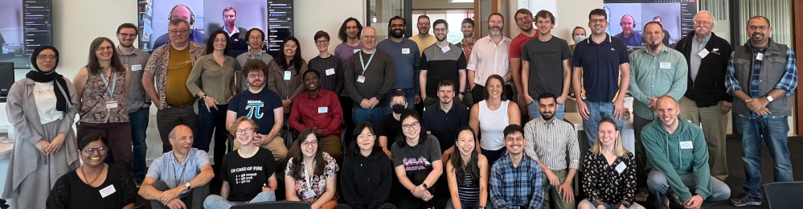

Ella Kaye, Senior Research Software Engineer at the University of Warwick and one of the organizers of the R Contributors project (also on Meetup), recently spoke with the R Consortium about her path into the R community and her efforts to make contributing to base R more accessible and inclusive. She shared insights from organizing R Developer Days, using GitHub to lower barriers for new contributors, learning with joy while developing the R package aperol, and fostering community with rainbowR.

Please share about your background and involvement with the RUGS group.
I am currently a Senior Research Software Engineer (RSE) at the University of Warwick in the UK. However, my career path to this point has been long and windy, via mathematics, secondary school teaching, market research, and statistics. I was first introduced to R while pursuing an MSc in Applied Statistics, where I learned to use it in an academic context for statistical analysis. Over time, I found that I enjoyed software development more than statistics itself, which led to my transition into research software engineering.
During the first year of my PhD program, I developed my first R package, BradleyTerryScalable, for fitting the Bradley-Terry model to pair-wise comparison data. This experience ignited my passion for R package development. In 2017, I presented the package at the useR! conference in Brussels. Just before then, I’d also learnt about R-Ladies and met some members of the London chapter. At the conference, I fully immersed myself in the R community and felt a great sense of camaraderie and a real joy of belonging.
At Warwick, I’m on the committee of the Warwick R User Group, but for this interview, I’d prefer to talk about the R Contributors project. This initiative is primarily driven by Dr. Heather Turner, along with many other contributors. I’m employed on Heather’s fellowship grant, “Sustainability and Equality, Diversity, and Inclusion (EDI) in the R project.” The objective of this fellowship is to foster a larger and more diverse community of contributors to base R.
We organize R Developer Days, which bring together a wide range of contributors, from members of R Core to those who’ve never contributed to base R before. In 2023, we held a three-day R Sprint at Warwick. Participants came from all over the world and represented various groups within the R community and the broader R world. It was a fantastic experience that led to several patches in the R codebase. We also run monthly R contributor office hours and a C Study Group for R contributors.

R Project Sprint, University of Warwick, 2023
Heather and I are very excited because, along with a large team of co-leads, we were recently awarded a grant of £500k from the Research Software Maintenance Fund to run a project over the next two years: “Enabling the Next Generation of Contributors to R”. You can read more about what this work will entail in this blog post.
Do you recommend any techniques for planning for or during the event? (Github, Zoom, other.) Can these techniques be used to make your group more inclusive to people who cannot attend physical events in the future?
At the R Dev Days, we’re doing something a bit different and more specific than general R User Group meetings. What makes the R Dev Days successful is the diverse range of problems and opportunities for people to come together and address bugs in the R codebase.
Success hinges on identifying suitable bugs to work on, as many listed on Bugzilla may exceed the technical capabilities of the participants or require buy-in from R Core members. A lot of work goes into reviewing bugs on Bugzilla beforehand to select those that are suitable for a Dev Day, ensuring they cater to varying levels of experience and technical skills.

R Contributors at R Dev Day @ PLUS 2024
We aim to cover a range of issues, including documentation improvements, statistical bugs, or infrastructure. Additionally, there is significant work happening to translate R’s error messages into various languages. During R Dev Days, attendees who speak languages other than English can participate by working on translating messages through a web-based translation interface.
For R Dev Days, we have a GitHub repo to keep track of ideas and tasks, making use of discussions, issues and labels. This has a lower barrier-to-entry than Bugzilla, and makes collaboration easier and more familiar. Those not able to attend in-person can also engage with these issues.
Overall, these preparations and strategies contribute to a more engaging and productive experience for everyone involved.
Please share about a project you are currently working on or have worked on in the past using the R language. Goal/reason, result, anything interesting, especially related to the industry you work in?
In summer 2024, I developed the R package aperol. It began as a joke, though underpinned by some serious considerations. It led to some wonderful community interactions and showcases the joy and benefits of working openly.
At useR! 2024, a few people went out for drinks. Over a round of Aperol Spritzes, they began wondering what an R package called “aperol” might do, which led to a lively discussion on Mastodon. During this exchange, just after the conference, Nick Tierney humorously suggested that a package called “aperol” could generate praise. I jumped on that idea and suggested generating “drunken praise,” referencing the existing praise package that programmatically creates compliments. I quickly put together a package that generates praise from the praise package, then garbles it, mixing up words or repeating them.
While the package is a joke, it was also motivated by a talk with a serious message. At the same useR! conference, Fonti Kar had delivered a very well-received talk about the value of creating silly projects. She emphasized that learning to code in R can feel high-stakes, but engaging in a lighthearted project where the outcomes don’t matter can be an excellent opportunity to learn. Fonti had learnt package development by writing the ohwhaley package, which generates ASCII art of a whale accompanied by a pun. Fonti’s talk was part of the inspiration for aperol - I wrote it in the same spirit (pun intended).
I had assumed, being an experienced package developer, that creating aperol would be straightforward, and, for v0.1.0, it was. However, one of the wonderful things about publishing projects on GitHub and engaging in open-source work is that others can see what you’re doing and comment or contribute. For instance, Maëlle Salmon reached out with suggestions to improve the code, which I appreciated, pointing me towards the local_seed() function in the withr package. Additionally, Collin Schwantes proposed a pull request to add a new function. While his feature idea was fun, its implementation went against some best practices in package development. It turned into a learning opportunity for both of us, and we ultimately solved the problem by making use of the environment. This underscores Fonti’s point that building silly things can facilitate serious learning.
I also appreciate what this experience says about the R community. I love the journey from throw-away comment to silly package to serious learning, with folks in the R community engaged at each stage. During the same conference, Kelly Bodwin delivered a keynote address titled “Keep R weird,” expressing her deep affection for the R community and its joy, fun, and silliness. That talk fired me up and was also part of the inspiration for creating the aperol package.